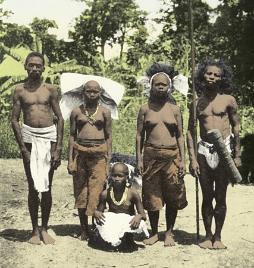
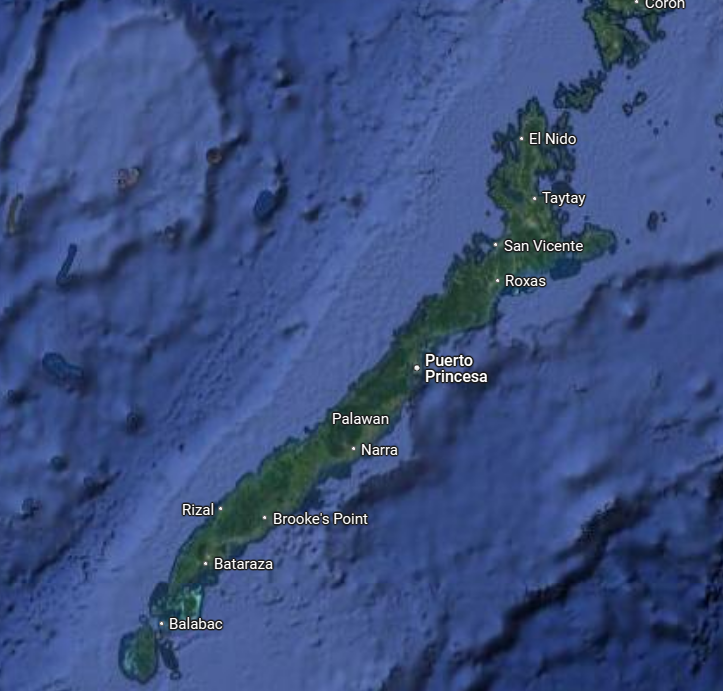
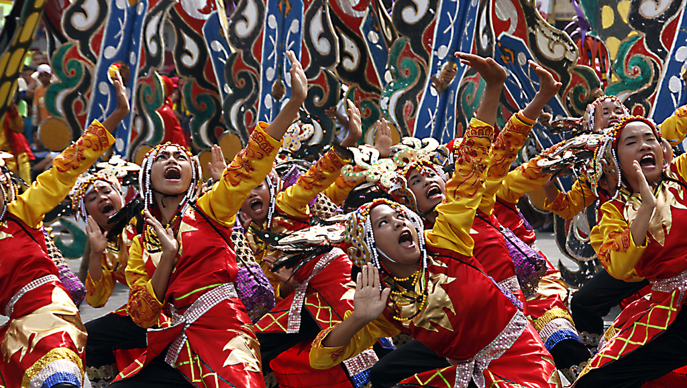
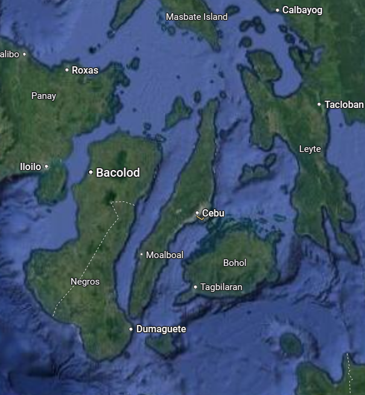
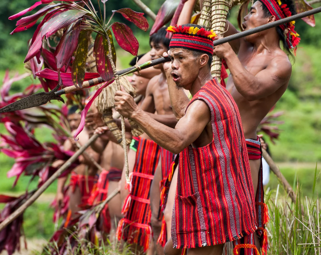
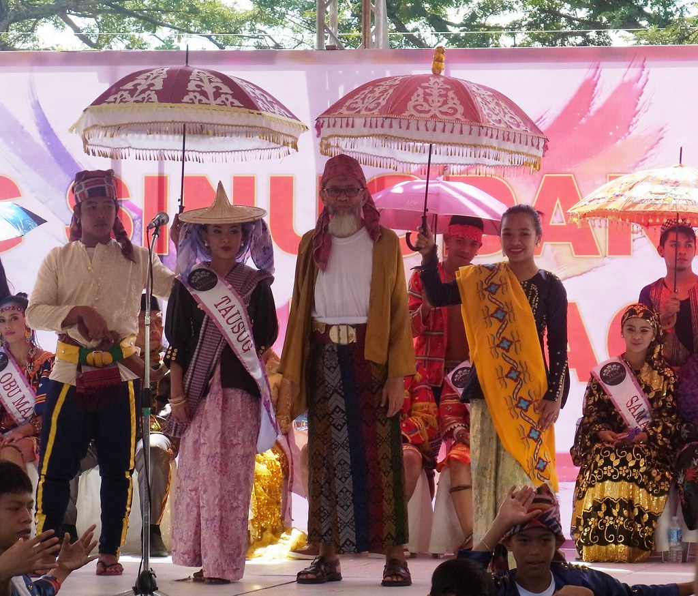
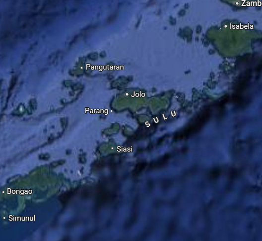
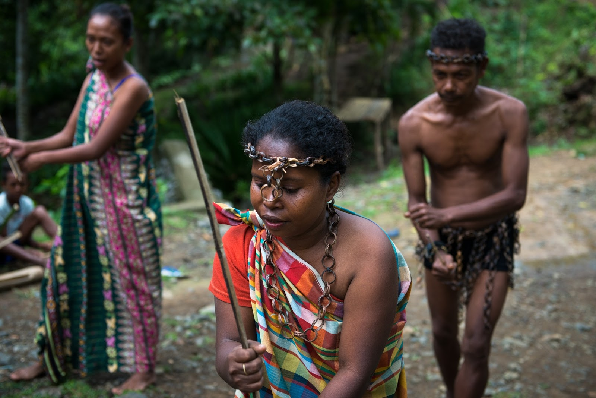
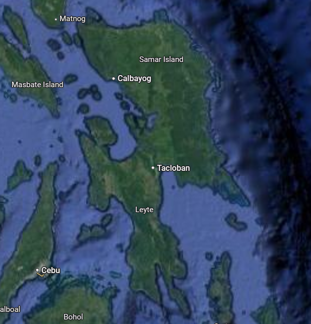

| Name | Picture | Description | Location | Agriculture |
|---|---|---|---|---|
| Batak |  |
Roots from the negrito people after they went to philippines by land bridges, have less people as of before, less hygiene than normal, and is the most endangered tribe in palawan due to laws and population decline. |  |
Copal-a resin from tree after it leaks from precise holes to extract it and sold to companies since its needed for varnish. |
| Cebuano |  |
2nd Largest Ethnic group, the language is austronesian, in the generic group called "visayans", diet of mostly rice and fish since most live near shore rather than the mountainous terrains, made houses out of coconuts, and most of the people are roman catholic |  |
Fishing and farming, rice was replaced by ground cornmeals since they didn't have the knowledge yet to do it before. |
| Igorot |  |
located in mountainous areas, known for headhunting, have some root to the austronesians, live in treehouses or populous villages, complex rituals for spirit especially of ancestors metalworking, animal sacrifice, and kinship is found in Igorot tribe. |  |
Grow rice by either: terraced hills or shifting gardens, and is either dry or wet. |
| Tausog |  |
Most culture of this tribe is based on influence from other sulu archipelago islands such as malaysia and indonesia, mostly muslim, one of the largest muslim groups in the philippines, kinship, land is mangaed by datus and clans, and economy is based on its agriculture. |  |
Rice, cassava, yams, corn with other grains, Fishing is an obvious way to get food since the island is surrounded by water which is also used for trading. |
| Waray |  |
Lives in baybayons or small house made of bamboo and palm leaves, one of its dances "kuratsa" is influenced on mexican dances, catholic and animism, due to it being one of eastern part of the philippines its more dangered if a typhoon comes close, but known for being resilient due to it. |  |
They farm: grapes, durian, cocounut, and obviously and rice. And also since they are near water obviously they fish, if there isn't any flood or typhoon happening |